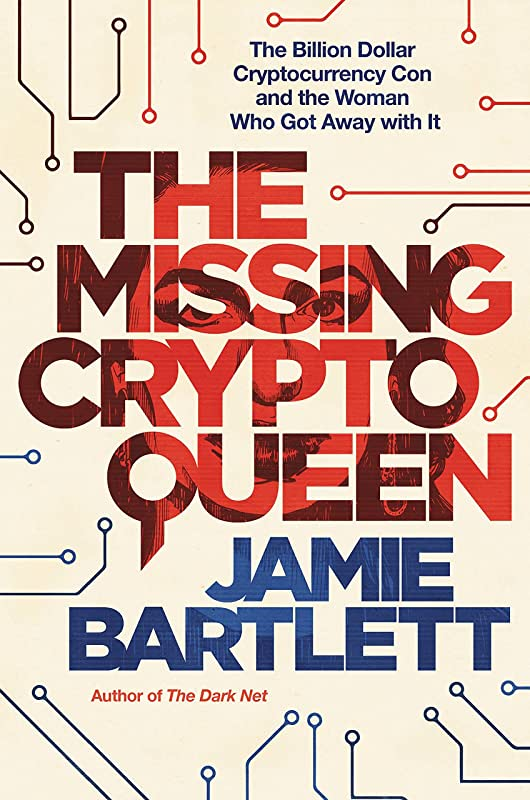

My self Naga Anudeep Yalamanch from india, vijayawada came to united states for my masters. I have completed my undergrad from Velagapudi Ramakrishna Siddhartha Engineering college in Mechanical stream with a 7.2 cgpa. Now i have changed my major to ACS as i thought it was really that easy to complete masters in computer science but now struggling as it was beginning and I don't have any previous knowledge in computer science.The plan of completing masters is good for upgrading my skills.
The podcast The Missing Cryptoqueen is about the disappearance of Dr. Ruja Ignatova, the founder of the cryptocurency OneCoin. The host of the podcast is Jamie Bartlett. Bartlett is a journalist and author of books such as The People vs Tech, Radicals Chasing Utopia, and The Dark Net. Bartlett investigates the rise of OneCoin and its creator Dr. Ruja. He travels across the world in search Ignatova who disappeared mysteriously in 2017. Along the way he interviews a variety of interesting characters. Listeners will be fascinated learning about the clues leading to Dr. Ruja. The Billion Dollar Cryptocurrency Coin and the Woman Who Got Away with It 175 countries, four billion dollars, one scam: the thrilling rise and fall of the biggest cryptocurrency con in history and the woman behind it all
